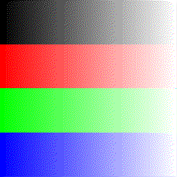
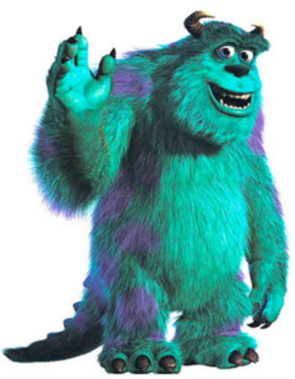
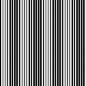

|
||
--noisify 0 |
--noisify 0.1 |
--noisify 0.5 |
Fully Implemented:
Image.h; Image.cpp: class Image32 has been modified by adding three methods
void Pixel32::updateAdd_r(int addend_r); void Pixel32::updateAdd_g(int addend_g); void Pixel32::updateAdd_b(int addend_b)template <typename T> T Max/Min(): Used to choose max/min element among several numbers in Rotation Manipulation.Image32::rotateNearest; Image32::rotateBilinear; Image32::rotateGaussian: user can rotate a picture in arbitrary angle of [0,360°] rather than [0,90°].
Image32::funFilter: Fun Filter Method (Barrel Transformation), shrink the distance(EveryPoint,origin) proportionally according to polar coordinates.
Image32::rotateGaussian; Image32::scaleGaussian:choose the gaussian parameter of
variance = 0.35, radius = 5
| |
||
--noisify 0 |
--noisify 0.1 |
--noisify 0.5 |
 |
 |
 |
--brighten .5 |
--brighten 1 |
--brighten 2 |
 |
--gray |
 |
 |
|
--contrast .5 |
--contrast 1 |
--contrast 2 |
 |
||
--saturate .5 |
--saturate 1 |
--saturate 2 |
 |
 |
 |
--quantize 1 |
--quantize 2 |
--quantize 4 |
--rDither 1 |
--rDither 2 |
--rDither 4 |
--oDither2x2 1 |
--oDither2x2 2 |
--oDither2x2 4 |
|  | ||
--fsDither 1 |
--fsDither 2 |
--fsDither 4 |
|  |
--blur3x3 |
--Edge3x2 |
 |
 |
|
--scaleNearest .7 |
--scaleNearest 1 |
--scaleNearest 1.3 |
 |
 |
|
--scaleBilinear .7 |
--scaleBilinear 1 |
--scaleBilinear 1.3 |
|  | ||
--scaleGaussian .7 |
--scaleGaussian 1 |
--scaleGaussian 1.3 |
--rotateNearest 30 |
--rotateBilinear 30 |
--rotateGaussian 30 |
--Fun Filter: Sully |
--Fun Filter: Stripe |
 |
|
--Original Yoda |
--Crop Yoda |
Wentao Dou |
Shimin Pan |
Composite |
 |
||
Origin_1 |
Origin_2 |
Simple Translation |
Origin_1 |
Origin_2 |
Translation Plus Scale |
 |
||
Origin_1 |
Origin_2 |
Translation Plus Rotation |
 |
||
Origin_1 |
Origin_2 |
MultiLine |
Animation |